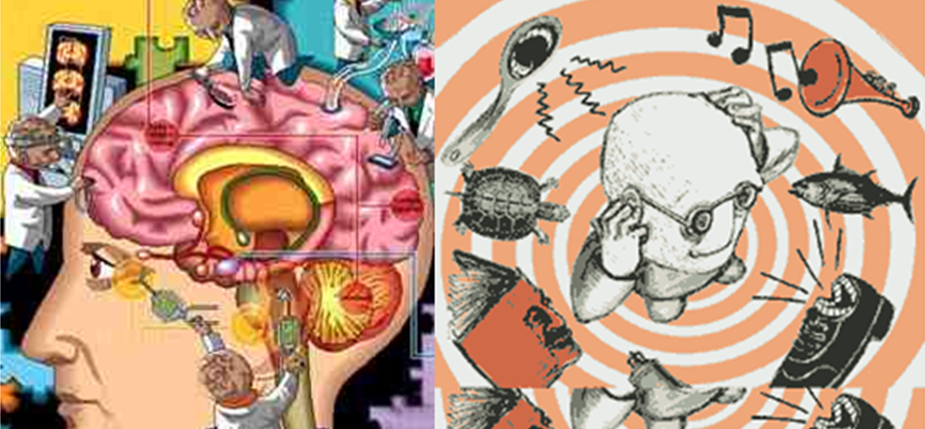

Su origen se atribuye a una alteración precoz del desarrollo cerebral por causas diversas que combinan factores de predisposición genética y desencadenantes de tipo ambiental. Esta interacción entre genes y ambiente condiciona una toxicidad cerebral del sistema de la dopamina (neurotransmisor presente en diversas áreas del cerebro y que es, especialmente, importante para la función motora del organismo) y, quizás, también de otros sistemas de neurotransmisión, que produce severas anomalías en las conexiones entre diferentes áreas del cerebro.
Sintomas
La esquizofrenia implica una serie de problemas de pensamiento (cognición), comportamiento y emociones. Los signos y síntomas pueden variar, pero generalmente implican fantasías, alucinaciones o habla desorganizada, y reflejan una capacidad deficiente de vivir normalmente. Entre los síntomas se pueden incluir los siguientes:
- Fantasías: Son creencias falsas que no tienen base en la realidad. Por ejemplo, crees que estás siendo perjudicado o acosado; ciertos gestos o comentarios se dirigen a ti; tienes una habilidad o fama excepcionales; otra persona está enamorada de ti; o está a punto de ocurrir una catástrofe importante. Las fantasías se producen en la mayoría de las personas que tienen esquizofrenia.
- Alucinaciones: Por lo general implican ver o escuchar cosas que no existen. Sin embargo, para la persona con esquizofrenia, tienen toda la fuerza y la repercursión de una experiencia normal. Las alucinaciones pueden implicar cualquiera de los sentidos, pero escuchar voces es la alucinación más común.
- Pensamiento desorganizado (discurso): El pensamiento desorganizado se infiere a partir del habla desorganizada. La comunicación eficaz se puede ver afectada y las respuestas a preguntas pueden no relacionarse con estas de manera parcial o completa. En raras ocasiones, el habla puede incluir el agrupamiento de palabras sin sentido que no se puedan entender, lo cual suele conocerse como ensalada de palabras.
- Comportamiento motor extremadamente desorganizado o anormal. Esto puede mostrarse de varias maneras, desde la tontería infantil hasta la agitación impredecible. El comportamiento no está enfocado en un objetivo, así que es difícil hacer las tareas. El comportamiento puede incluir resistencia a seguir instrucciones, postura inadecuada o extrańa, una completa falta de respuesta o movimiento inútil o excesivo.
- Síntomas negativos. Esto se refiere a la capacidad limitada para vivir de manera normal, o a la falta de ella. Por ejemplo, la persona puede descuidar su higiene personal o parecer que carece de emociones (no hace contacto visual, no cambia las expresiones faciales o habla en un tono monótono). Además, la persona puede perder interés en las actividades cotidianas, retraerse socialmente o carecer de la capacidad de experimentar placer.

Causas de la esquizofrenia
Alteraciones bioquímicas.
La esquizofrenia podría ser consecuencia de un problema de comunicación entre las neuronas. De todos los neurotransmisores (los que se encargan de transmitir la información entre las neuronas), se ha visto que la dopamina (neurotransmisor presente en diversas áreas del cerebro y que es especialmente importante para la función motora del organismo) es el que está más alterado. Clásicamente, la hipótesis de que existe un desequilibrio de la función dopaminérgica ha sido la principal hipótesis neuroquímica de la esquizofrenia, postulando que la enfermedad, o al menos los síntomas psicóticos, son el resultado de un exceso de actividad dopaminérgica. La principal baza de esta hipótesis se basa en que los fármacos que disminuyen la dopamina mejoran la psicosis, mientras que los fármacos o drogas que la aumentan pueden desencadenar síntomas de este tipo o agravar la esquizofrenia.
Alteraciones en la estructura del cerebro.
Cerca de la mitad de los pacientes presentan alteraciones en la estructura del cerebro. Estas incluyen dilatación de los ventrículos, disminución del volumen de determinadas áreas del cerebro (especialmente del lóbulo temporal, de la formación amigdalo-hipocampal, del tálamo, de la corteza prefrontal) y una disminución global del tamaño del cerebro. No obstante, es importante resaltar que estas alteraciones no son específicas de la esquizofrenia ni todos los pacientes las presentan.
Alteraciones del funcionamiento del cerebro.
La mayoría de los estudios de neuroimagen funcional, en los que no solo se estudia la estructura del cerebro sino también la función, han señalado una disminución en la función de la corteza prefrontal en la esquizofrenia, que es la parte del cerebro que da habilidad de razonamiento. Esta hipofrontalidad constituye uno de los hallazgos biológicos de esquizofrenia más ampliamente contrastados. La hipofrontalidad es más evidente durante la realización de pruebas mentales que requieren de una activación prefrontal.
Maneras de combatir la esquizofrenia
La esquizofrenia no se puede prevenir, la única forma de prevenir el avance de sus síntomas es someterse al tratamiento necesario.
Está requiere tratamiento de por vida, incluso si los síntomas desaparecen. El tratamiento con medicamentos y terapia psicosocial puede ayudar a controlar la enfermedad. En algunos casos, puede ser necesaria una internación.
Por lo general, un psiquiatra con experiencia en esquizofrenia guía el tratamiento. El equipo de tratamiento también puede incluir un psicólogo, un asistente social, personal de enfermería psiquiátrica y, posiblemente, un encargado del caso para coordinar la atención. El abordaje de equipo completo puede estar disponible en clínicas con pericia en el tratamiento de la esquizofrenia.

| Para más información pulsa aqui |